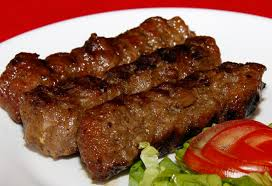

INGREDIENTE
sare
2 linguri ulei de măsline
1 ardei gras
1 ardei iute
2-3 căţei usturoi
1 ţelină
2 cepe albe
800 g dovleac turcesc
piper
1. Se curăţă dovleacul, se taie cubuleţe şi se pune să fiarbă în apă cu sare. Se pun şi câteva picături de ulei de măsline şi se lasă să fiarbă la foc potrivit.
2. Între timp, se curăţă ceapa, ţelina, usturoiul, ardeiul gras şi se pun la fiert împreună cu dovleacul. Se lasă să fiarbă în continuare, la foc mic.
3. Se încearcă dacă au fiert legumele şi se scot în sită. Ceapa, usturoiul şi ardeiul se dau de o parte, iar dovleacul şi ţelina se pasează cu mixerul.
4. Piureul de dovleac se amestecă cu zeama în care a fiert, se adaugă ulei de măsline, sare şi piper, după preferinţă, şi se mai lasă să dea într-un clocot, apoi se ornează cu frunze de pătrunjel verde şi rondele de ardei iute. Rețeta supă cremă de dovleac se serveşte cu crutoane
Mici pufosi

Ingrediente:
700 de grame de carne de vita (pulpa);
300 de grame de carne de oaie sau de porc (mai grasa – piept, ceafa);
250-350 de mililitri de supa de oase sau apa foarte rece.
Condimente pentru 1 kilogram de carne:
22 de grame de sare;
o jumatate de lingurita de piper negru proaspat macinat;
o lingura rasa de cimbru uscat;
5-6 boabe de ienibahar;
o jumatate de lingurita de boabe de coriandru (cam 30 de bobite mici);
1 lingurita rasa de seminte de chimen;
2 lingurite de boia dulce;
5-7 catei de usturoi;
o lingurita rasa de bicarbonat de sodiu;
putin ulei pentru uns.
Mod de preparare:
Taie pulpa de vita si pieptul de porc in cubulete si curata feliile de piept de porc (carnea trebuie curatata de sorici si de oase).
Toaca bine carnea, alaturi de cateii de usturoi, prin cea mai fina sita de la masina de tocat.
Zdrobeste intr-un mojar toate condimentele (mai putin bicarbonatul).
Framanta carnea tocata foarte bine, timp de 8-10 minute, alaturi de condimente si de bicarbonatul stins cu lamaie.
Pe masura ce incepi sa framanti, adauga supa de oase rece (sau apa rece).
Pasta trebuie sa fie pufoasa si moale. Nu trebuie sa folosesti neaparat tot lichidul.
Muta pasta de mici intr-un castron curat, acoper-o cu folie de plastic sau aluminiu si las-o la frigider peste noapte.
Incinge grillul electric si unge plita cu ulei inainte de a aseza mititeii pe ea. De asemenea, mititeii trebuie bine unsi cu ulei pentru a nu se lipi de gratar.